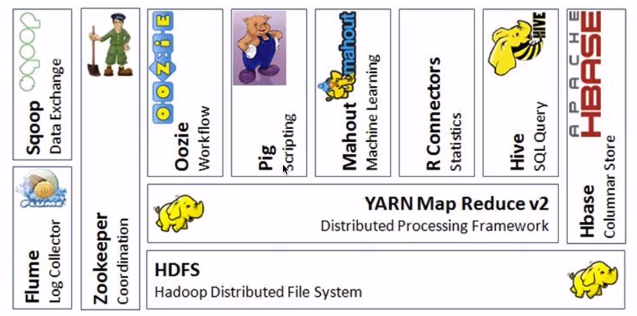
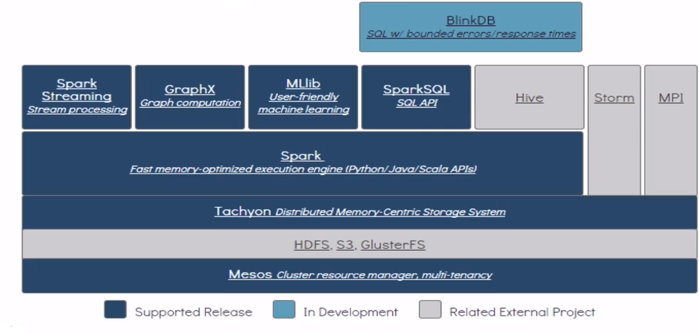
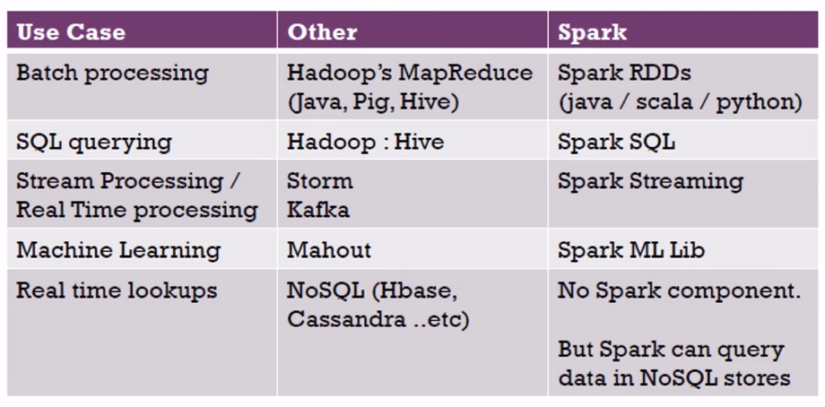
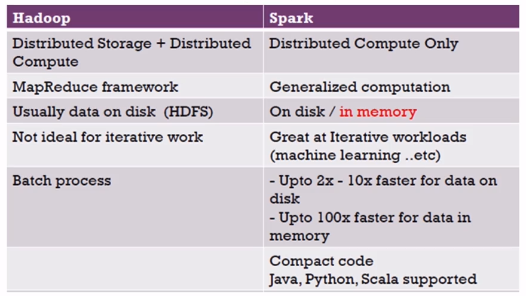
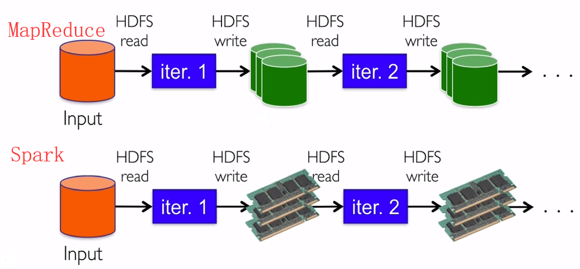
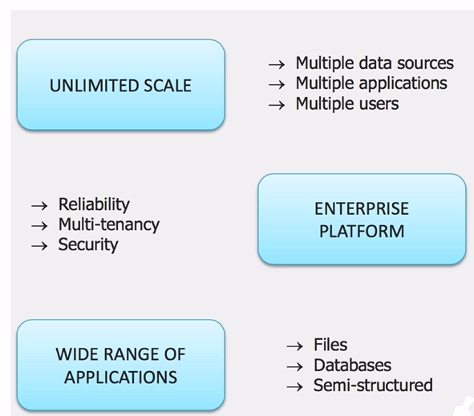
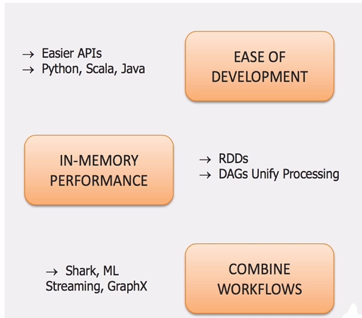
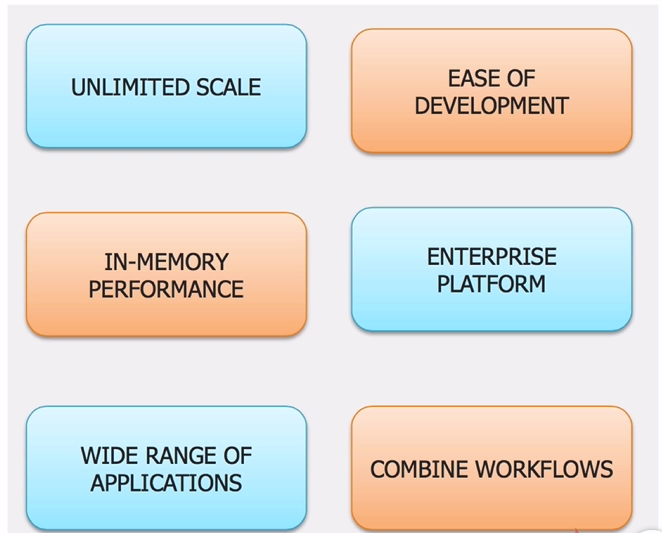
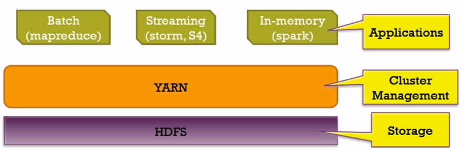

Spark对比Hadoop
Hadoop生态系统

Spark生态系统 BDAS（BDAS:Berkeley Data Analytics Stack）

Hadoop和Spark生态圈对比：

表格解读：
|用例 |其他|Spark生态圈|
|–|–|–|
| 批处理|Hadoop中的MapRdeuce（Java操作MR,Pig,Hive） | Spark RDDs（java/scala/python调用相关api即可） |
|SQL查询 | Hadoop中的Hive | Spark SQL |
| 流处理/实时处理 |Storm，Kafka | Spark Streaming |
| 机器学习 |Mahout（已停止更新） |Spark ML Lib |
| 实时查询 | NoSQL（Hbase,Cassandra等等）| 无相关spark组件；但是Spark可以在NoSQL存储中查询数据（api调用即可） |
Hadoop对比Spark：
表格解读：
|Hadoop | Spark |
|–|–|
|分布式存储+分布式计算 | 只关心分布式计算|
|MapReduce框架 |广义的计算（通用的计算（流处理-机器学习等）） |
|通常数据存储在磁盘上（HDFS） | 即存储在磁盘上又存储在内存中（可设置存储策略）|
|不适合迭代工作 |擅长迭代工作（机器学习） |
|批处理 |即可批处理又可流处理；磁盘上的数据速度要快到2x-10x，而内存上的数据速度要快到100x |
| 一般使用java| 支持Java, Python, Scala，R等|
MapReduce对比Spark
iter：作业处理；
MapReduce作业1和作业2之间的数据交互要落地磁盘；速度慢。
Spark作业1和作业2之间的数据交互无需落地；速度快。

Spark为什么比mapreduce快？
- 基于内存计算，减少低效的磁盘交互；
- 高效的调度算法，基于DAG；
- 容错机制Linage，精华部分就是DAG和Lingae
Spark和Hadoop的协作性
Hadoop优势
- 数据规模
支持多种不同数据源
支持多种应用
支持多种用户 - 企业级的平台
高可靠
多租户
安全性 - 应用范围
文件数据
数据库数据
支持半结构化数据

Spark的优势
- API简单，支持python，scala，java
- 内存计算框架
- 综合多个子框架进行使用

Hadoop+Spark（相辅相成）


Mapreduce和Spark的都是并行计算，那么他们有什么相同和区别
两者都是用mr模型来进行并行计算:
- hadoop的一个作业称为job，job里面分为map task和reduce task，每个task都是在自己的进程中运行的，当task结束时，进程也会结束。
- spark用户提交的任务成为application，一个application对应一个sparkcontext，app中存在多个job，每触发一次action操作就会产生一个job。这些job可以并行或串行执行，每个job中有多个stage，stage是shuffle过程中DAGSchaduler通过RDD之间的依赖关系划分job而来的，每个stage里面有多个task，组成taskset有TaskSchaduler分发到各个executor中执行，executor的生命周期是和app一样的，即使没有job运行也是存在的，所以task可以快速启动读取内存进行计算。
- hadoop的job只有map和reduce操作，表达能力比较欠缺而且在mr过程中会重复的读写hdfs，造成大量的io操作，多个job需要自己管理关系。spark的迭代计算都是在内存中进行的，API中提供了大量的RDD操作如join，groupby等，而且通过DAG图可以实现良好的容错。